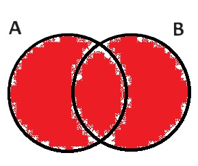
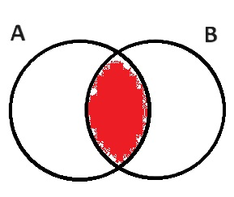
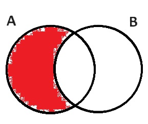
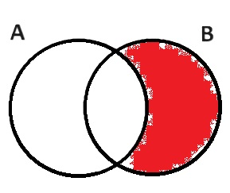

1º Bimestre
1. Álgebra Básica
2. Conjuntos
Lista de Exercícios (2,0 pontos) Teste (3,0 pontos) Prova (5,0 pontos) Recuperação (10,0 pontos)Aula 1
* Conjuntos e Raciocínio Lógico
Um conjunto pode ser descrito como uma coleção ou grupo de coisas.
Um conjunto é representado por uma letra maiúscula e seus elementos estão entre chaves { }, separados por vírgula ou representados por uma propriedade comum.
A = {a, e, i, o, u} (representação por enumeração)
A = {x | x é vogal do nosso alfabeto} (representação por propriedade)
Exemplo:
1) Represente por enumeração cada conjunto abaixo.
a) A = {x | x é um dia da semana}
b) B = {x ∈ N | x > 12}
c) C = {x ∈ N | x ≥ 3 e x < 100} (mostrar que é igual a 3 ≤ x < 100)
d) D = {x ∈ N | 3 < x ≤ 7}
e) E = {x ∈ N | x > 2 e x < 3}
RELAÇÕES
a) Pertencimento (∈): elemento → conjunto
x ∈ B: "x pertence B" ou "x é elemento de B"
x ∉ B: "x não pertence B" ou "x não é elemento de B"
Exemplo:
2) Seja A = {1, 2, a, b} e B = {3, 4}. Classifique como falso (F) ou verdadeiro (V).
a) a ∈ A. b) 3 ∉ B.
c) 4 ∈ B. d) 7 ∈ A.
e) A ∈ B.
b) Subconjunto (⊂): conjunto → conjunto
A ⊂ B: "A é subconjunto de B" ou "A está contido em B"
A ⊄ B: "A não é subconjunto de B" ou "A não está contido em B"
A ⊂ B ⇔ todo elemento de A pertence a B.
Exemplo:
3) Seja A = {1, 2, 3, 4}, B = {3, 4, 5} e C = {2, 3, 4}. Classifique como falso (F) ou verdadeiro (V).
a) B ⊂ A. b) {1, 2, 3} ⊄ B.
c) C ⊂ A. d) {1, 2} ⊂ A.
e) C ∈ A. f) 5 ⊂ B.
c) Igualdade (=): conjunto → conjunto
A = B ⇔; A ⊂ B e B ⊂ A
Exemplo:
4) Complete a lacuna com = ou ≠.
{a, b, c} _____ {c, b, a, c}
{a, b, c} _____ {b, a, c, e}
Fazer exercícios de 1 a 5 da lista.
Aula 2
* Operações com Conjuntos
União (∪):
A ∪ B = {x | x ∈ A ou x ∈ B}
Interseção (∩):
A ∩ B = {x | x ∈ A e x ∈ B}
Diferença (-):
A - B = {x | x ∈ A e x ∉ B}
B - A = {x | x ∈ B e x ∉ A}
Exemplo:
3) Seja A = {1, 2, 3, 4}, B = {3, 4, 5, 6}. Calcule.

a) A ∪ B =
b) A ∩ B =
c) A - B =
d) B - A =
Fazer exercício 6 da lista.
Teste: __/__/__ (3,0 pontos)
Matéria:
- Representação de conjuntos.
- Relações e operações com conjuntos.